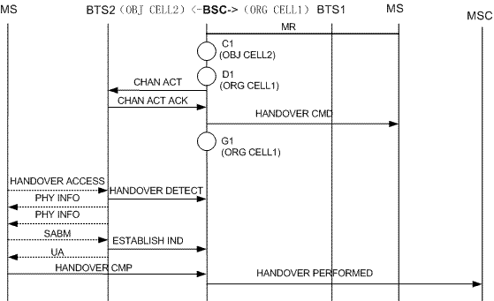

Measurement Counters
| ID | Counter | Description |
|---|---|---|
| 1278084417 | CELLCELL.INCELL.HO.REQ | H380:Incoming Inter-Cell Handover Requests |
Description
This counter provides the number of incoming inter-cell handover requests in the target cell.
Along with Failed Cell Incoming Handovers, this counter indicates whether the failure rate of incoming-cell handovers is abnormal. Along with the Outgoing-Cell Handover Measurement concerning the neighboring cells, this counter also indicates the performance of inter-cell handovers.
Measurement point
If the originating cell and the target cell are GSM cells, in the internal inter-cell handover procedure, the direct retry procedure, or the internal inter-cell handover (BSC loop) procedure, the originating cell sends an Intercell Handover Request message to the target cell after handover decision at C1, as shown in the following figure. This counter is incremented by one when the target cell (serving cell) receives the Intercell Handover Request (SDCCH or TCH) message.

In the inter-BSC handover procedure, after the target BSC receives a HANDOVER REQUEST message from the MSC, the BSC checks whether the incoming handover meets the conditions. If the handover is required, the BSC requests a channel, generates a HANDOVER CMD message and saves it in the buffer. Then, the BSC sends a CHAN ACT message to the BTS. After receiving a CHAN ACT ACK message from the BTS, the BSC sends a HANDOVER REQ ACK message encapsulated with the HANDOVER CMD message to the MSC and this counter is incremented by one. After that, the MSC forwards the HANDOVER CMD message to the originating BSC, and the originating BSC sends the HANDOVER CMD message to the MS.

Formula
None
Unit
None
Related Features
| Counter | Feature ID | Feature Name |
|---|---|---|
| CELLCELL.INCELL.HO.REQ |
GBFD-110601 GBFD-510501 |
HUAWEI I Handover HUAWEI II Handover |